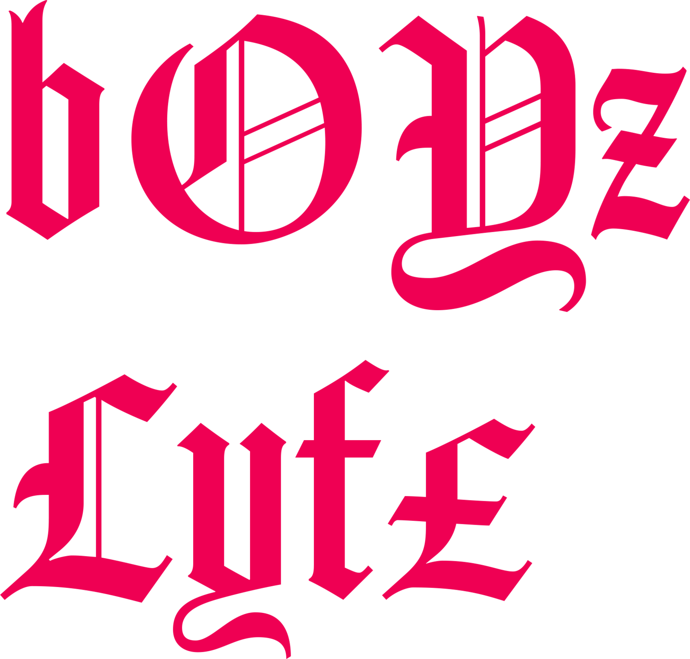
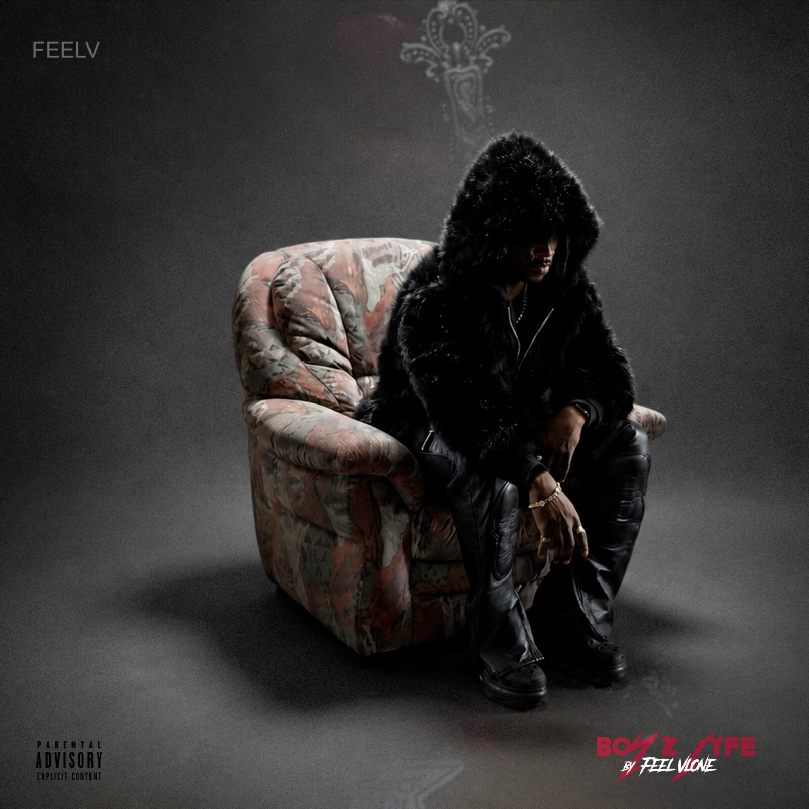

« À travers le monde, pour la culture » · #FEELV

Feel Vlone · singer / producer / beatmaker · biel-bienne, suisse
Écouter le projet →« comme une impression d'être fait pour ça, un controle sur rien »

Feel Vlone · singer / producer / beatmaker · biel-bienne, suisse
Écouter le projet →« comme une impression d'être fait pour ça, un controle sur rien »

265+ projets FL Studio créés sur 13 mois. 15 retenus. Entièrement autoproduit — prod, écriture, mix. Emo-rock × hip-hop : mélodies répétitives et mélancoliques, paroles introspectives, percussions agressives.
Sortie progressive — un nouveau titre toutes les deux semaines.
Concept propriétaire FEELV. Chaque morceau est scanné sur l'échelle Power vs Force (0–1000) — la fréquence émotionnelle dominante au moment de la composition.
Pour découvrir les chiffres derrière FEELV, suis-moi sur ta plateforme préférée. Tu pourras ensuite débloquer la section.
◇ Vérification automatique via Spotify (OAuth) — bientôt disponible.
Sélectionne où tu m'écoutes — pour cette session, ta réponse débloque les stats. (Vérification automatique en V2.)
Audience 68% Male / 27% Female · 51% âgés 25–34 ans · 56% découverte via playlists utilisateurs.
Top pays : Nigeria · Suisse · Italie · Congo · Afrique du Sud.